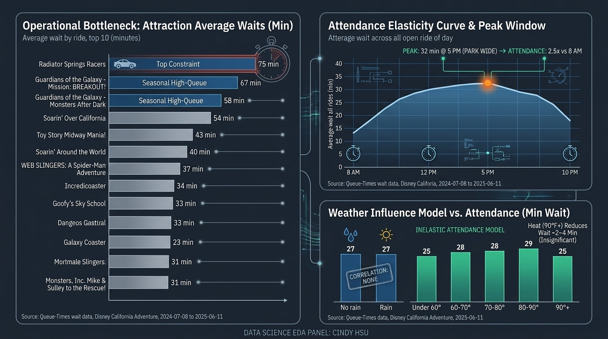
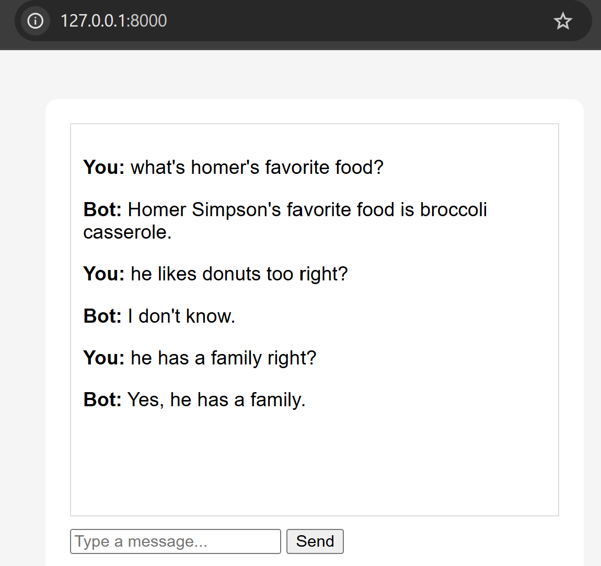
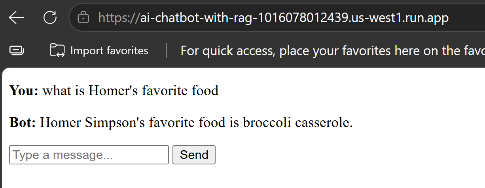
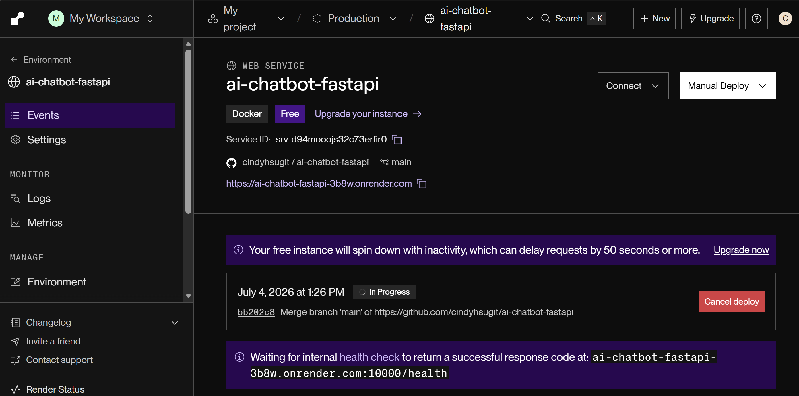

Combining 10+ years of software engineering rigor with state-of-the-art retrieval-augmented generation (RAG), stateful agent orchestration, predictive machine learning pipelines, and large-scale data analytics.
I am an applied GenAI, Machine Learning, and Data Science Engineer based in Orange County, CA. My focus is combining foundational software engineering standards—version control, unit testing, and robust backend design—with intelligent LLM systems and quantitative machine learning modeling.
My recent technical builds span production-grade stateful RAG architectures with ONNX runtime acceleration, Model Context Protocol (MCP) tool design, exploratory data analysis across 650K+ operational records, and scikit-learn machine learning classification pipelines.
scikit-learn (Logistic Regression, Pipelines, ColumnTransformer), Cross-Validation, Feature Scaling, Hyperparameter Tuning, Classification Metrics.
pandas, NumPy, Matplotlib, Seaborn, Exploratory Data Analysis, Data Cleaning, Merging Multimodal Datasets, API Integration.
LangGraph, LangChain, OpenAI & Gemini APIs, Prompt Engineering, MCP Server Development, Claude Desktop.
ChromaDB, FAISS, Hugging Face Transformers, Cross-Encoder Reranking, ONNX Runtime Optimization.
Python, FastAPI, Async/Await, pytest (100% test coverage standards), Docker, Google Cloud Run, Render.
Git & GitHub, uv (Dependency Management), Cursor, AI-assisted development workflows.
Processed and merged a massive tabular dataset of 653,000+ operational records across 11 months with hourly Anaheim weather data fetched via Open-Meteo API. Conducted extensive Exploratory Data Analysis (EDA) using pandas, Matplotlib, and Seaborn to uncover critical correlation patterns between weather, diurnal hourly escalations, and ride bottlenecks.

Engineered a robust scikit-learn machine learning classification pipeline featuring ColumnTransformer and StandardScaler to predict 60+ minute wait bottlenecks. Implemented rigorous cross-validation and feature isolation to guarantee zero data leakage, achieving 93.5% model accuracy over the baseline.
Full-featured RAG pipeline and stateful multi-turn conversational agent deployed live on Google Cloud Run and Render. Features a two-stage retrieval architecture (ChromaDB + HuggingFace cross-encoder reranking), ONNX Runtime optimization for 3-4x latency reduction, provider-agnostic LLM failover (OpenAI/Gemini), and Tavily web search fallback (Corrective RAG).



Built a Model Context Protocol (MCP) server integrated with Claude Desktop exposing live geospatial tools. Connected authenticated GeoNames APIs and paginated MediaWiki category data, handling protocol SDK updates and local tool routing.
StubHub, Udemy, Mercari, AppSense, Phunware (2012–2019)
Engineered consumer-facing iOS apps, shared libraries, and core architectural features serving millions of users. Managed build and release pipelines, localization workflows, and cross-functional engineering collaboration.
Currenex, a State Street company (2008–2012)
Executed rigorous manual functional, regression, and integration testing for high-throughput financial trading platforms, establishing foundational defect tracking and quality assurance discipline.
I am actively exploring GenAI, Machine Learning, and Data Science Engineering opportunities. Whether you want to discuss AI architecture, RAG optimization, predictive pipelines, or a potential role, feel free to reach out!
twncindy@yahoo.com